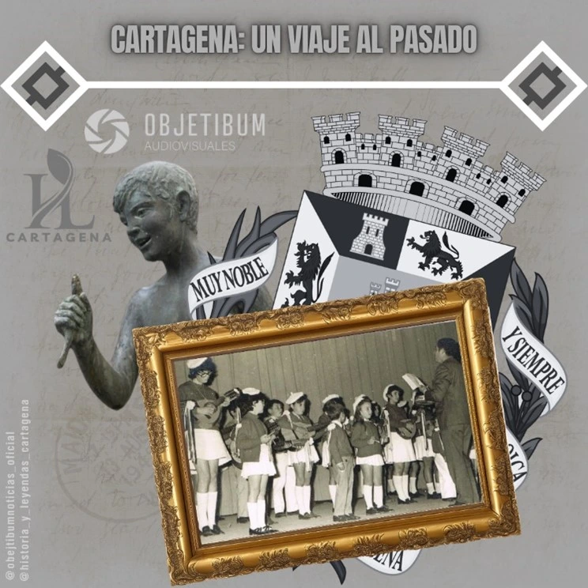

La Navidad en Cartagena es un tiempo de magia y tradiciones que transforman por completo la ciudad. Desde las luces en las calles hasta las recetas transmitidas de generación en generación, la ciudad vibra con el espíritu navideño.
La celebración comienza con el sorteo de la lotería el 22 de diciembre y se extiende hasta el 6 de enero, cuando los Reyes Magos llenan de alegría los hogares. La preparación para este día incluye la alineación de zapatos, cartas llenas de deseos y ofrendas para los camellos, creando una atmósfera cargada de ilusión.
En las cocinas, las familias elaboran mantecados, tortas escaldadas y otros dulces tradicionales siguiendo recetas transmitidas con amor. El "olor a Pascua", una mezcla de aromas dulces y cálidos, envuelve Cartagena, convirtiéndose en símbolo de esta época.
Las calles se iluminan con decoraciones y se llenan de risas y villancicos. La Navidad en Cartagena representa la unión familiar y el compartir, valores que se reflejan en cada rincón de la ciudad, desde los barrios tradicionales hasta el centro.
La cena de Nochebuena reúne a las familias, dejando atrás compromisos externos para compartir momentos inolvidables. La magia de esta noche, acompañada del calor de los abrazos y la alegría de las reuniones, hace de Cartagena un lugar único para vivir la Navidad.
Bajo el cielo estrellado de Cartagena, la Navidad se teje con hilos de luz y amor, recordándonos que la verdadera esencia de estas fiestas reside en la calidez de estar juntos.
Historias y Leyendas de Cartagena para Objetibum Noticias.

CaixaBank enfrenta una incidencia técnica que paraliza su app y banca online
El jueves 19 de diciembre, CaixaBank sufrió una caída generalizada en sus servicios digitales, afectando tanto a su aplicación móvil como a su plataforma de banca online. Este problema técnico, que comenzó a reportarse desde el mediodía, generó frustración entre miles de usuarios que no pudieron acceder a sus cuentas ni realizar operaciones financieras habituales.
La entidad aseguró que trabaja para solucionar la incidencia lo antes posible, descartando que se trate de un ciberataque. Sin embargo, el inconveniente surge en un momento crítico: la temporada navideña, donde el volumen de transacciones suele dispararse.
Desde primeras horas de la mañana, numerosos clientes comenzaron a expresar su preocupación a través de redes sociales, principalmente en X (antiguo Twitter), reportando problemas al intentar iniciar sesión. Algunos usuarios compartieron capturas de pantalla con mensajes de error como "Sin conexión" o "Se ha producido un error", reflejando su imposibilidad para operar en la app y en la banca online.
A pesar de las declaraciones de CaixaBank asegurando que la incidencia estaba limitada a los servicios digitales, varios clientes reportaron fallos adicionales en pagos con tarjeta y en la retirada de efectivo en cajeros automáticos, aumentando la inquietud.
Desde la entidad, reconocieron públicamente el problema a través de su cuenta oficial en X: "Hemos detectado un problema en la app y la banca online que puede generar lentitud en la operativa y dificultades en el acceso. Estamos trabajando para resolverlo lo antes posible. Sentimos las molestias ocasionadas."
Alrededor de las 18:00 horas, la entidad informó que los servicios digitales comenzaban a recuperar la normalidad, aunque sin ofrecer detalles técnicos sobre el origen del problema ni confirmar si la incidencia estaba completamente resuelta.
La caída de los servicios digitales ocurre en un momento especialmente delicado. Este tipo de interrupciones no solo afecta la confianza de los usuarios, sino que también pone de manifiesto la dependencia creciente de los servicios digitales en la vida cotidiana.
Informa Jesús Inarejos para Objetibum Noticias.